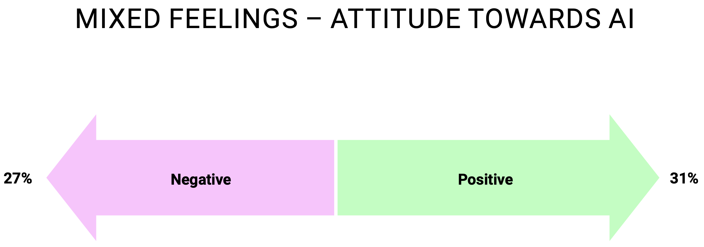
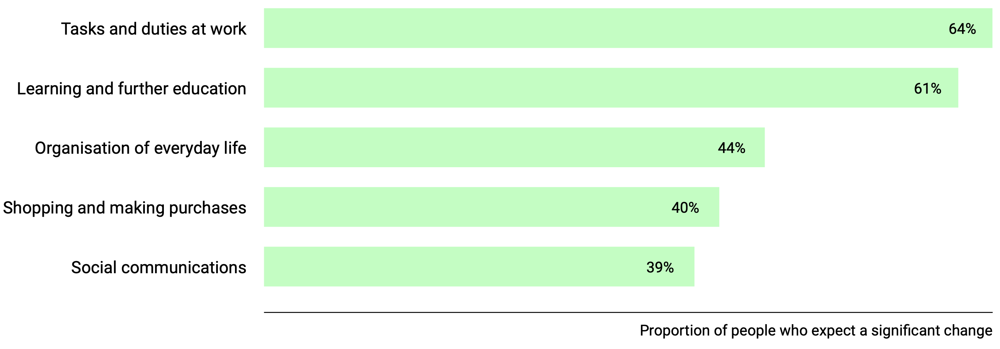
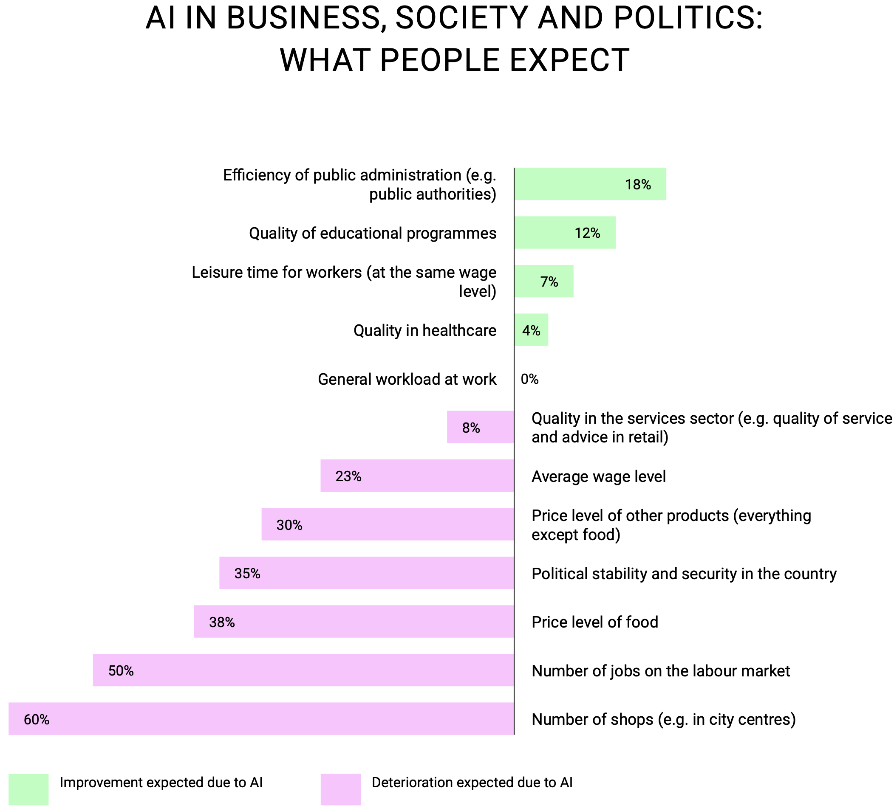
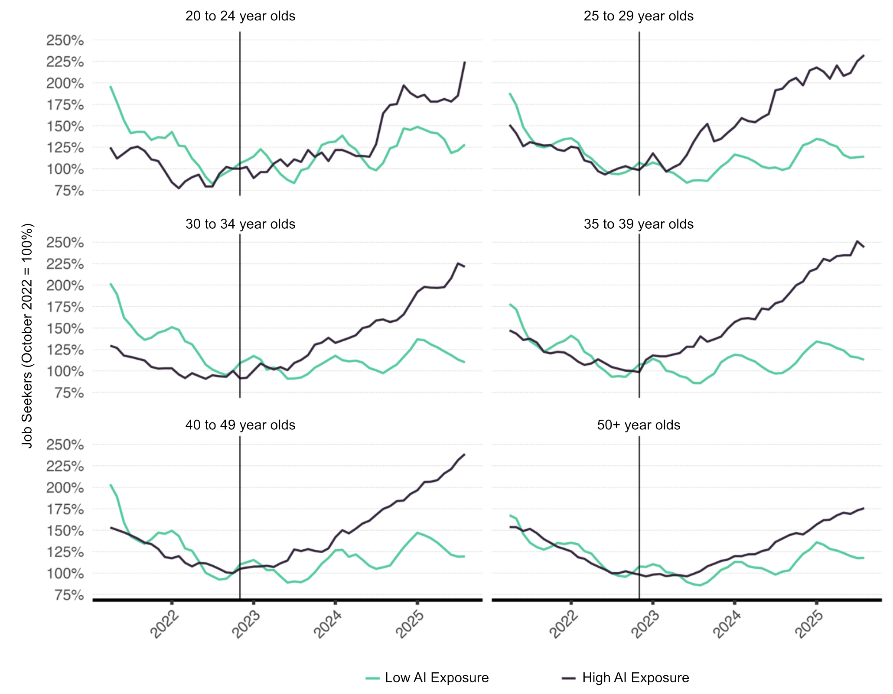
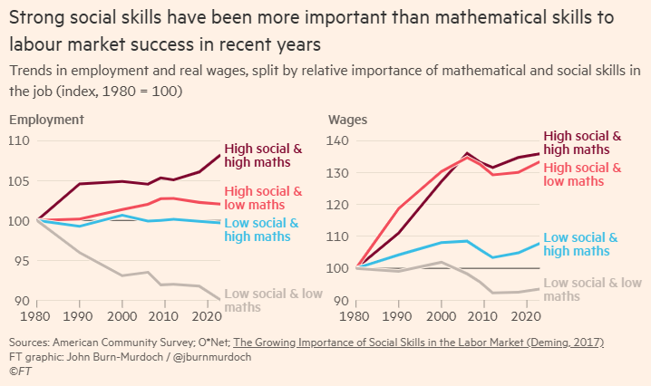

What people think about AI
In recent years, artificial intelligence has fundamentally transformed not just our technological landscape but increasingly our working lives as well. We haven't yet arrived at all-powerful superintelligence, but the effects on society, the labor market, and recruiting are already tangible. In a recently published study, the Gottlieb Duttweiler Institute examined this societal shift in detail.
Through a representative survey across the DACH region — 3,031 consumers and 287 managers with leadership responsibility — GDI asked: What do people think about AI, and what developments do they expect?
The answer is ambivalent. 31 percent of respondents view AI positively overall, while 27 percent lean negative. People feel uncertain when thinking about the future — their feelings are mixed.

When it comes to specific expectations, a more nuanced picture emerges. The biggest changes are anticipated in the workplace: 64 percent expect major upheaval there. Expectations are similarly high for learning and professional development. Somewhat lower, but still significant, are the expected changes in daily life, shopping, and social communication.

Looking more closely at which changes are expected to be positive and which negative, concerns outweigh hopes. Respondents do see some improvements — particularly in the efficiency of public administration. But the worries revolve mainly around money and jobs: 60 percent expect a decline in the number of shops in city centers, and 50 percent expect fewer available jobs.

50% of respondents expect a decline in the number of available jobs — the classic argument that AI will replace human work.
GDI Consumer Survey, 2024The Swiss labor market feels the impact
The concern is not unfounded. A recently published study by KOF at ETH Zurich reveals a clear correlation: since the launch of ChatGPT in November 2022, the number of job seekers in AI-affected occupations has risen significantly faster than in less affected occupations — across all age groups.

Programmers and software developers are among the losers. Younger workers are more affected than older ones — though the gap is smaller than in the United States. The question presses: if AI primarily replaces programming and administrative work, which skills are still in demand?
The skill mismatch
A recent report from Wharton University provides answers. The researchers systematically analyzed which skills workers offer on their résumés and which employers demand in job postings. The finding is revealing.
More demanded than supplied
- Public Speaking
- Digital Marketing
- Public Relations
More supplied than demanded
- Problem Solving
- Communication
- Leadership & Accountability
The most in-demand skills are not technical — they revolve around interpersonal abilities. At the same time, many applicants advertise broad, generalist signals like “communication” or “leadership” — skills so widespread that they barely differentiate anymore.
With AI, this becomes even more relevant: routine and standardized work gets automated. What moves to the foreground is whatever is scarce, specific, and value-creating.
What follows from this
For employers
- Measure skills systematically — make surpluses and shortages visible
- Decompose roles into concrete tasks — clearly separate human strengths from AI tasks
- Tie compensation to the actual value of skills, not to job titles
For workers
- Build a skill portfolio instead of just maintaining a résumé
- Specific, role-relevant skills increase market value
- Use AI deliberately to build execution competence faster
Source: Wharton University & Accenture
Soft skills beat technical abilities
The growing importance of social competencies can also be demonstrated empirically. A study published in the Financial Times shows: social skills are now more strongly linked to employment and wages than purely technical abilities. Occupations that demand both high social and high mathematical skills have seen the largest wage increases since 1980.

AI is increasingly automating standardized, quantitative work. The value of human labor is shifting toward collaboration, communication, judgment, and team coordination.
Knowing, Wanting, Acting
In its Future Skills study, GDI developed a model that explains which human capabilities will endure in an AI-shaped future. It rests on three pillars:
Knowing
- Digital literacy
- Understanding statistics
- AI literacy
- Lifelong learning ability
- Scientific thinking
Wanting
- Formulating long-term goals
- Entrepreneurial thinking
- Creativity & imagination
- Curiosity & drive to explore
- Self-determination
Acting
- Teamwork
- Self-efficacy
- Group decision-making
- Adaptability
- Courage to make mistakes
Machines are getting better and better at knowing — systems like ChatGPT have essentially read the world's knowledge. And they're also making progress in acting: from agriculture to construction to the latest developments in robotics.
But machines don't want anything. They have no ambitions, no dreams, no goals. That remains reserved for humans. Defining goals is becoming the future skill.
GDI Future Skills Study, 2020Even though the focus lies on human capabilities, AI competence remains indispensable: a technological understanding, the ability to interpret statistics, and an awareness of how AI impacts one's own work.
AI in HR: The agentic hiring process
A concrete example from Switzerland shows how AI is already affecting daily work in human resources.
AI is making it ever easier to create application dossiers. This lowers the effort barrier to sending out a job application — dramatically. Using ChatGPT to polish a cover letter is just the beginning.
Vibe Application
Derived from the currently popular term “vibe coding” — no longer writing the code yourself, but telling an agent what you want. The same principle already works for the hiring process: tell an AI agent which job you're looking for, and let it do all the work.
Using Claude Code, Anthropic's AI agent, an entire application pipeline can be automated: scanning job profiles automatically, tailoring CVs to each position, leveraging skill matching, sending out mass applications.
100 applications per day per person is not science fiction. It's happening today.
What does this mean for HR?
70 percent of companies experimenting with AI are doing so in HR. The most common use cases: writing job postings, automating administrative tasks, and matching candidates by competency.
Opportunities
- Invest quickly in AI-powered screening processes
- Personal connections move to the foreground
- Efficiency: thousands of matches in seconds
- Broader talent pools, faster time-to-hire
Risks
- Danger of bad hires with full automation
- Soft skills and cultural fit become invisible
- Worse candidate experiences
- Loss of authenticity: real people only meet on the first day of work
Agentic Hiring: Agent vs. Agent
The future of recruiting could look like this: AI agents apply autonomously to AI recruiting systems. Agent talks to agent. The efficiency gains are enormous — but the question remains whether a process in which humans only truly meet on the first day of work still leads to the right hires.
The recommendation: prioritize candidate orientation, maintain human interaction, monitor regulatory developments — and invest in upskilling your own recruiters.